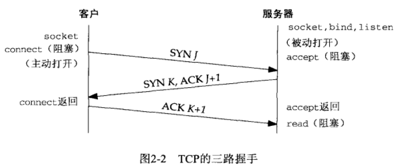
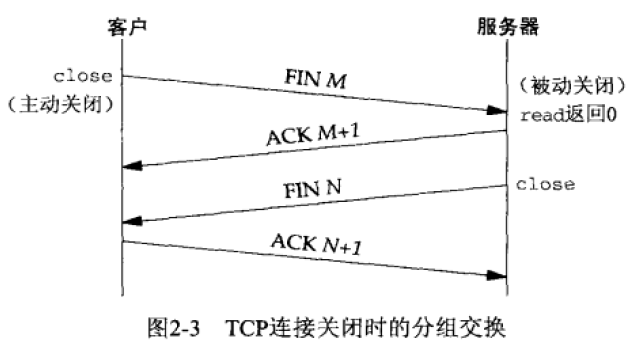
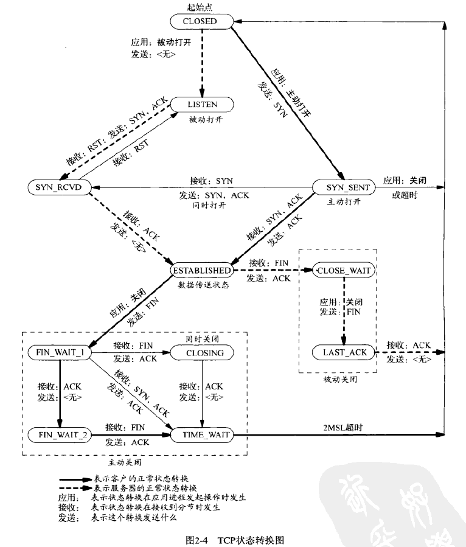

UDP 协议是一个简单的传输层协议。应用进程向一个 UDP 套接字写入一个消息，该消息随后被封装到一个 UDP 数据报，该 UDP 数据报进而又被封装到一个 IP 数据报，然后发送到目的地。 UDP 不保证 UDP 数据报会到达最终目的地，不保证各个数据报的先后顺序跨网络后保持不变，也不保证每个数据报只到达一次。因此，使用 UDP 进行网络编程的问题是缺乏可靠性。如果一个数据报到达了最终目的地，但是校验和检测发现有错误，或者该数据报在网络传输中被丢弃了，它就无法被投递给 UDP 套接字，也不会被源端自动重传。如果想要确保一个数据报到达其目的地，只能由应用程序来实现对端确认、本端的超时与重传等机制。
每个 UDP 数据报都有一个长度。如果一个数据报正确地到达其目的地，那么该数据报的长度也会随数据一同传递给接收端应用程序。而 TCP 是一个字节流协议，没有任何记录边界。
UDP 提供无连接的服务，因为 UDP 客户端与服务器之间不必存在任何长期的关系。一个 UDP 客户端可以创建一个套接字并发送一个数据报给一个给定的服务器，然后立即用同一个套接字发送另一个更数据报给另一个服务器。同样地，一个 UDP 服务器可以用同一个 UDP 套接字从若干个不同的客户端接手数据报。
TCP 协议提供客户端与服务器之间的连接。 TCP 客户端会先与某个服务器建立一个连接，再跨该连接与那个服务器交换数据，然后终止这个连接。
TCP 协议提供了可靠性。当 TCP 向另一端发送数据时，它要求对端返回一个确认，如果没有收到确认，TCP 就自动重传数据并等待更长时间。在数次重传失败后，TCP 才放弃。 TCP 并不保证数据一定会被对端接收，因为这是不可能做到的，如果有可能，TCP 就把数据递送到对方断电，否则就通过放弃重传并终端连接这一手段来通知用户。如此说来，TCP 也不能被描述为100%可靠的协议，它提供的数据的可靠递送或故障的可靠通知。
TCP 含有用于动态估算客户端和服务器之间的往返时间（round-trip time，RTT）的算法，以便知道等待一个确认需要多少时间。
TCP 通过给其中每个字节关联一个序列号对所发送的数据进行排序。
TCP 提供流量控制。TCP 总是告诉对端在任何时刻它一次能够从对端接收多少字节的数据，这被称为通告窗口。在任何时刻，该窗口指出接收缓冲区中当前可用的空间量，从而确保发送端发送的数据不会使接收缓冲区溢出。。该窗口时刻动态变化，当接收到来自发送端的数据时，窗口大小就会减小，但是当接收端应用从缓冲区中读取数据时，窗口大小就增大。当窗口减小到0时，TCP 对应某个套接字的接收缓冲区已满，导致它必须等待应用从该缓冲区中读取数据后，方能从对端再接收数据。
TCP 是全双工的。这意味着在一个给定的连接上，应用可以在任何时刻在进出两个方向上既发送数据又接收数据。
TCP 连接的建立与终止
三路握手
- 服务器必须准备好接受外来的连接。这通常通过调用 socket 、 bind 和 listend 这3个函数来完成，我们称之为被动打开。
- 客户端通过调用 connect 发起主动打开。这导致客户端 TCP 发送一个 SYN 分节，它告诉服务器将在（待建立的）连接中发送的数据的初始序列号。通常 SYN 分节不携带数据，其所在的 IP 数据报只含有一个 IP 首部、一个 TCP 首部以及可能有的 TCP 选项。
- 服务器必须确认（ACK）客户端的 SYN ，同时自己也得发送一个 SYN 分节，它含有服务器将在同一个连接中发送的数据的初始序列号。服务器在单个分节中发送 SYN 和对客户端 SYN 的 ACK （确认）。
- 客户端必须确认服务器的 SYN 。
这种交换至少需要3个分组，因此称之为 TCP 的三路握手。

TCP 连接终止
TCP 建立一个连接需要3个分节，终止一个连接则需要4个分节。
- 某个应用进程首先调用 close，我们称该端执行主动关闭。该端的 TCP 于是发送一个 FIN 分节，表示数据发送完毕。
- 接收到这个 FIN 的对端执行被动关闭。这个 FIN 由 TCP 确认。它的接收也作为一个文件结束符传递给接收端应用进程（放在已排队等候该应用进程接收的任何其他数据之后），因为 FIN 的接收意味着接收端应用进程在相应连接上再无额外数据可接收。
- 一段时间后，接收到这个文件描述符的应用进程将调用 close 关闭它的套接字，这导致它的 TCP 也发送一个 FIN 。
- 接收这个最终的 FIN 的原发送端 TCP （即执行主动关闭的那一端）确认这个 FIN 。
每个方向都需要一个 FIN 和一个 ACK ，因此通常需要4个分节。在某些情形下，步骤1的 FIN 随数据一起发送；另外，步骤2和步骤3发送的分节都出自被动关闭的那一端，有可能被合并成一个分节。

在步骤2和步骤3之间，从执行被动关闭的一端到执行主动关闭的一端流动数据是可能的，这成为半关闭。
上例中是客户端执行主动关闭的情形，不过无论是客户端还是服务器都可以执行主动关闭。通常情况下都是客户端执行主动关闭，但是某些协议（HTTP/1.0）却由服务器执行主动关闭。
TCP 状态转换
TCP 为一个连接定义了11种状态，并且 TCP 规定如何基于当前状态及在该状态下所接收的分节从一个状态转换到另一个状态。
下图中用粗实线表示通常的客户端状态转换，用粗虚线表示通常的服务器状态转换。

TCP 端口号分为3个部分：
- 众所周知的端口为 0 - 1023。
- 已登记的端口为 1024 - 49151。
- 49152 - 65535 是动态的或随机的端口。
套接字对
一个 TCP 连接的套接字对是一个定义该连接的两个端点的四元组：本地 IP 地址、本地 TCP 端口号、外地 IP 地址、外地 TCP 端口号。套接字对唯一标识一个网络上的每个 TCP 连接。
缓冲区大小及限制
IPv4 数据报的最大大小是 65536 字节，包括 IPv4 首部。
IPv6 数据报的最大大小是 65575 字节，包括 40 字节的 IPv6 首部。注意， IPv6 的净荷长度字段不包括 IPv6 首部，而 IPv4 的总长度包括 IPv4 首部。
在两个主机之间的路径中最小的 MTU 称为路径 MTU。1500 字节的以太网 MTU 是当今常见的路径 MTU。两个主机之间相反方向的路径 MTU 可以不一致，因为在因特网中路由选择往往是不对称的。
当一个 IP 数据报从某个接口送出时，如果它的大小超过了相应链路的 MTU， IPv4 和 IPv6 都将执行分片。
IPv4 和 IPv6 都定义了最小重组缓冲区大小，它是 IPv4 和 IPv6 的任何实现都必须保证支持的最小数据报大小。对于 IPv4 为 576 字节，对于 IPv6 为 1500 字节。
TCP 有一个最大分节大小 MSS ，用于向对端 TCP 通告对端在每个分节中能发送的最大 TCP 数据量。
每个 TCP 套接字都有一个发送缓冲区，可以使用 SO_SNDBUF 套接字选项来更改该缓冲区的大小。当某个应用进程调用 write 时，内核从该应用进程的缓冲区中复制所有数据到所写套接字的发送缓冲区。如果该套接字的发送缓冲区容不下该应用进程的所有数据，或是应用进程的缓冲区大于套接字的发送缓冲区，或是套接字的发送缓冲区已有其他数据，该应用进程将被投入睡眠。（这里假设该套接字是阻塞的）内核不从 write 系统调用返回，直到应用进程缓冲区中的所有数据都复制到套接字发送缓冲区。因此，从写一个 TCP 套接字的 write 调用成功返回仅仅表示可以重新使用原来的应用进程缓冲区，并不表明对端的 TCP 或应用进程已收到数据。